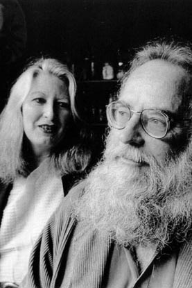
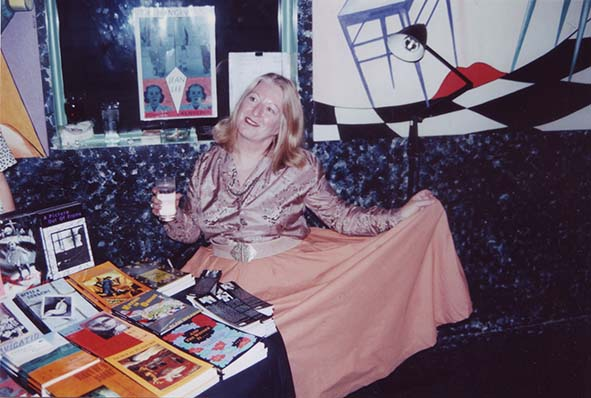
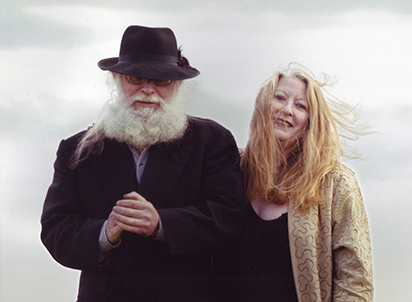

|
|
|||
 |
 Black Pepper is an exciting Australian publishing house, described by the Herald-Sun as ‘one of Australia’s boldest’. Since its emergence in 1995, Black Pepper has published some of Australia’s most innovative works of prose and poetry, winning awards, critical acclaim, and a significant share of the Australian market for literature. Black Pepper has released nearly seventy titles to date. These publications have launched, developed or renewed the writing careers of an impressive list of novelists, poets and writers of short fiction. The maturity of these works is reflected in the high quality of book design under the artistic direction of Gail Hannah.It was obvious. Black Pepper is the spice and grit that is needed to keep a creative scene tasty and alive. If you want the challenge of innovative writing by outstanding Australian talent, ask to see a Black Pepper title. Ted Hopkins, Herald-Sun The most exciting new publisher
in the country. Rhonda
Wilson, The Sunday Age
Black
Pepper is to be congratulated not only for its continuing commitment
to the publishing of poetry, but also for matching quality production to fine poetry. Jennifer
Strauss, Australian Book Review
Black
Pepper
continues to produce writing that warrants attention. Brian
Edwards, Mattoid
Black Pepper is
a floodlight in the gloom, and they have an outstanding catalogue. Anthony
Lawrence, poet and
novelist
The
most
vigorous and interesting of the presses in Australia publishing poetry. Tim
Thorne, poet and critic
Black Pepper obviously knows what is the spice of life. Andrew McCue, Ulitarra  Australian Poetry Journal Volume 5.1 (July 2015) by Margaret Bradstock EssayBlack Pepper Press: Spice and GritMargaret Bradstock  Black
Pepper obviously knows what is the spice of life. Back in 1995, when the major publishing houses began withdrawing poetry from their lists to concentrate on more lucrative areas, small presses stepped in to fill the resultant gap. Black Pepper was one of these. Kevin Pearson, who describes himself as a ‘troubadour poet’, was born in Melbourne, spent time on the road travelling between states and, while working in Adelaide during the early ’80s, established a reputation for his poetry. Publishing projects for the Wakefield Press gave him the experience needed to start Black Pepper when he returned to Melbourne and settled in North Fitzroy. Gail Hannah had worked as administrator, assistant manager and publicist for the Almost Managing Agency in Melbourne, and had begun her own creative enterprise by the time she met Kevin Pearson. She became the artistic director for Black Pepper and is credited with the high quality of book design for the press. The seed funding for Black Pepper was provided by the sale of Kevin Pearson’s parental home. The offices, warehousing and design room are courtesy of Gail Hannah’s large Victorian house, giving Black Pepper rent-free premises. Neither receives a salary from the business venture, which employs part-time assistant editors, web designers, publicists and book producers. To begin with, Black Pepper did not have the advantage of assistance from the Literature Board of the Australia Council but, once established as a significant publisher of works of literary merit, the press had a long run of support on a fairly regular basis. In the case of Tasmanian authors, Black Pepper has also received assistance from Arts Tasmania. With the recent reduction of Government funding for the Arts, publishers again face the difficult task of keeping poetry afloat, and it is noteworthy that three fine collections from Black Pepper in the past year do not bear State Government or Australia Council logos. On the other hand, print runs have become easier now technology has caught up. A minimum of 500 copies was once necessary, when text and covers were both printed offset. With digital printing, according to Kevin Pearson, his first run will now be 200 to 250 books, which is fairly standard for small presses, and after that copies can be printed as required. Poets are not asked to contribute to the cost of publication, and receive royalties of ten percent of RRP. They tend to buy copies for readings, which are a major outlet for sales. ‘Almost all the press’s poetry titles break even’, says Pearson, ‘or generate a small profit which is recycled into ongoing production’. In 1995, Black Pepper published ten titles—short stories, a novel, novellas, a book of meditations and five collections of poetry, two of which were Pearson's own. When asked whether one of their reasons for this generic mix was to establish a sound financial basis for the press (since poetry tends to have a limited popularity and saleability), Pearson responded:
Jennifer Harrison’s first poetry collection, Michelangelo’s Daybook, was launched to strong critical acclaim (with reviews by Jennifer Strauss in Australian Book Review; Alan Gould in Quadrant; Catherine Bateson and Barbara Giles, judges of the Anne Elder Award, won by Harrison in that year). Laurie Clancy, in an Age interview with Kevin Pearson about the Melbourne poetry scene in 2000, is remembered as saying ‘If Black Pepper had done nothing else, its discovery of Jennifer Harrison justifies its existence’. John Anderson, whose experimental text the forest set out like the night had been rejected by Island Press, Paper Bark, Angus & Robertson and Penguin Books, ultimately found, as a rejection letter from Penguin Books intimated, ‘the right publisher and audience’ with Black Pepper. In 1999, Gary Catalano wrote in Ulitarra that ‘Pearson suggested that the length of the original manuscript was an issue’, yet he chose to print it in its entirety (complete with illustrations). Clearly, Pearson saw the merit of the collection and was willing to take a gamble where bigger presses were not. Anderson was not widely known, but was admired and respected by fellow poets and published alongside Kris Hemensley, John Tranter, Robert Harris and John Jenkins in Robert Kenny's first (1974) volume of Rigmarole of the Hours. He is compared favourably with Les Murray by Catalano, and Murray himself, in The Poetry Book Club of Australia,1 said of the forest set out like the night, ‘I would highly commend John Anderson’s distinctive experimental text, one which is bound to be influential’. Anderson’s next collection, the shadow’s keep, was also taken up by Black Pepper, in 1997, the year of his early and unexpected death. The pattern of across-genre publishing has continued up to the present day. In three years only (2007, 2008, 2012) there were no poetry collections, but in 2013 four of the five titles were poetry, and in 2014 two out of three were poetry, all from well-known poets. Overall, the press aims to maintain fifty percent of the mix as poetry titles. Books selected for publication throughout Black Pepper’s history reflect the publisher’s eclectic taste, but include a number of established and significant poets, who have chosen to remain with the Black Pepper ‘stable’. Repeat appearances come to us from Jordie Albiston (Botany Bay Document, 1996; The Hanging of Jean Lee, 1998); Adrienne Eberhard (Agamemnon’s Poppies, 2003; Jane, Lady Franklin, 2004; This Woman, 2012); Stephen Edgar (Other Summers, 2006; History of the Day, 2009; Eldershaw, 2013; Exhibits of the Sun, 2014); Jennifer Harrison (Michelangelo’s Prisoners, 1995; Cabramatta/Cudmirrah, 1996; Mosaics and Mirrors, with Graham Henderson and K.F Pearson, 1996; Dear B, 1996; Folly & Grief, 2006; Colombine, 2010); Homer Rieth (The Dining Car Scene, 2001; Wimmera, 2009; 150 Motets, 2013); Andrew Sant (Album of Domestic Exiles, 1997; Tremors, New and Selected Poems, 2004; Fuel, 2009; The Bicycle Thief, 2013); Nicolette Stasko (The Weight of Irises, 2003; The Invention of Everyday Life, 2007). Four poetry collections are listed on the Black Pepper website2 as bestsellers: Jordie Albiston’s The Hanging of Jean Lee, Homer Rieth’s Wimmera, Jennifer Harrison’s Colombine, and Stephen Edgar’s Eldershaw. The story of Jean Lee, the last woman hanged in Australia, as late as 1951,3 proved inherently fascinating and disturbing to readers, and critics almost unanimously praised the poetic skills and techniques involved in presenting the narrative as dramatic monologue. No fewer than fifteen reviews appeared in Australia’s most prestigious literary journals at the time, and in August 2006 a new opera was performed at the Sydney Opera House, based on Albiston’s ‘verse biography’, with Andrée Greenwell as composer and artistic director. In November 2013, Radio National presented a two-part feature in which Albiston walked the streets of Melbourne re-visiting Jean Lee’s haunts, and in December of the same year Lee’s story was played out in a dramatic post-pop concert version, such was its hold on the public imagination. But was it the melodramatic nature of the subject matter, the lyric power of the poetry, or a combination of both, that destined this book to be a bestseller? Perhaps the best answer to this is Judy Johnson’s comment that she saw Albiston’s work ‘as an example of how accomplished poetics and sensational story line can come together to create something memorable’. Discussing the HSC syllabus in Quadrant, Alan Gould commented that the committee ‘might do well to place The Hanging of Jean Lee […] before its students [...] a thoroughly compelling, incisive and finely wrought sequence of poems’. He expands this suggestion with reference to Albiston’s ‘acute eye for period and sociological accuracy’, her impressive constraint, an ear ‘as finely tuned to childspeak as it is to Australian working-class argot of the 1930s and 1940s’ and her ‘great art in structuring her story’. Such considerations find an echo in other critics’ responses. Judy Johnson claimed for Albiston ‘a particular gift for conjuring immediacy through unerring colloquial voice and a historian’s concern with re-creating time and place accurately’. Shane Rowlands commented in Meanjin that ‘Albiston is scrupulous in avoiding anachronisms. A meticulous researcher, she has a thorough understanding and sure grasp of the broader socio-historical context, economic conditions and significant public events’. David Wood drew attention to the ‘elegance and technical accomplishment […] a highly refined sensibility, a deft poetic talent with a sensitive ear for cadence and tonal modulation’. Structure, it is agreed, is not linear narrative, but thematic, varying and integrating perceptions, disrupting the reader's expectations. Judy Johnson, in particular, noted how Albiston ‘dislocates the story line—time and perspective leap deftly forwards, backwards and sideways’. A fine reception indeed, but there were reservations. Writing in Antipodes, Julian Croft drew attention to the way in which ‘occasionally Jean Lee’s voice sounds more like a radio drama of the time […] which though it makes sense in a way, sounds thin and trite at times. On others, Albiston gets the right register and makes her subject’s voice move away from flat prose into poetry’. He concedes that ‘the blend of direct and indirect narrative through real and imagined sources and revelation from Lee herself create a finely realised and sympathetic account of a blighted life. And there is the added benefit of some very moving and intelligent poetry’. By contrast, David Wood concluded his review with the remark that ‘It is a pity that the collection does not climax more effectively’, attributing this shortfall in part to the lack of strict chronology, and partly ‘because Albiston’s technique lacks sufficient muscularity’. Barry Hill questioned the quality of the poetry:
Dorothy Hewett declared herself ‘dissatisfied with the verse novel in general’, and asked, ‘why this fascination with a particular genre, apparently growing in popularity? […] The result is a tendency towards a flattening of diction, a uniformity of tone, that it seems difficult in the long run to transcend’. Gig Ryan, requiring both narrative tension and convincing poetics, is more specifically damning in her Age review:
She concludes, ‘This book does what it intends, calling Lee and capital punishment (abolished in Victoria, 1975)4 to our attention, but Lee remains somehow incomplete’. Geoff Page noted in The Canberra Times that, ‘perhaps disconcertingly’, a number of the poems are written from the vantage point ‘of an omniscient narrator or from the point of view of other key figures’, and suggested that they ‘diminish the claustrophobic intensity that might have been achieved if the reader had been confined to Jean Lee’s head throughout’. Page points out that ‘Traditional metres and rhymes set up firm expectations which are interestingly, and often frustratingly, denied, and draws attention to ‘a curious kind of moral ambivalence’, but agrees that ‘the book certainly succeeds […] mainly through its original poetic technique, in creating a sense of Lee's humanity’. The feminist perspective is introduced by Bev Braune in HEAT, adding a further dimension to the controversy: ‘It is the judgement of Lee as an “unrespectable woman” that has captured Albiston’s imagination’—a stance underlined by Edward Reilly’s contemporary memories of the event: ‘there was some sympathy amongst the local women: most of them thought Judge Duffy was too harsh in applying the law […] to do that to a woman was considered to be little more than judicial murder’. What might be concluded, in response to the varied critical reactions to The Hanging of Jean Lee, is that, in this case, the momentum of the whole is greater than the sum of its highly ordered and uncompromising parts. Fortunately, Kevin Pearson recognised its potential, and the book’s widespread public recognition speaks for itself. What we are left with is an image of finality, reminiscent of the awful precision of Bruce Dawe’s ‘A Victorian Hangman Tells His Love’, or the newspaper accounts of the execution of Chambers and Barlow in 1986, the mindless reassurance of ‘a good death’: I tie her carefully to Homer Rieth’s Wimmera (2009) was an even more significant publication for Black Pepper, selling over 5,000 copies. Wimmera is an epic poem in the classical mode about the Victorian district in which Rieth came to live, replacing the battles of heroes and gods with the struggle of human beings against the environment. In his foreword to the book, Justin Clemens suggests that ‘in its spiritual vision, it is reminiscent of the cosmic speculations of Wordsworth and Whitman’. Brian Edwards, in Australian Book Review, likewise rated it highly: ‘Grand in conception and impressively detailed in execution, this is a significant achievement indeed, and a major contribution to Australian literature’. Geoffrey Lehmann had also reviewed the publication positively, and Landline (ABC-TV Broadcast on 21 February 2010) featured a reading and discussion, with Tim Lee as reporter and input from Dr. Brian Edwards and Kevin Pearson. Pearson’s account of Wimmera’s rise to fame is memorable:
Pam Brown was less impressed:
Jennifer Harrison’s Colombine: New & Selected Poems (2010) represents a very different kind of collection. Reviews were fewer, but were more unequivocally positive, and the book was shortlisted for the 2011 Queensland Premier’s Literary Awards. As a New & Selected, it includes poems from Harrison’s first four poetry collections as well as new work, comprising two long sequences, ‘Fugue’ and ‘Colombine’. Poems like the haunting ‘Glass Harmonica’ (from Folly & Grief, 2006) are well worth revisiting and serve as a prelude to the next stage of her poetic development. In ‘Fugue’, as Geoff Page remarks, ‘the poet employs a variety of forms which rely on repetition, most notably the pantoum and variations of it. The cumulative impact of repeated lines (or nearly repeated lines) can be considerable but much depends on the quality of the line itself’. He cites a line that fails to make the grade, and admittedly the repetitive nature of the pantoum, experienced en bloc as here, rather than adding meaning to the opening stanza has a tendency to detract from the overall emotive force of individual lines. Against this, a repetition of some lines, or parts of lines, in many sections of the sequence ‘Colombine’ works powerfully and cumulatively towards the success of the dramatic monologue, building on figures already met in Folly & Grief. At this point it might be appropriate to pay tribute to Gail Hannah’s stunning cover design for Colombine, with its evocation of sorrow behind the mask/masque, reflecting themes and preoccupations of the book as a whole. Martin Duwell believes Harrison's fourth book, Folly & Grief, ‘contains her best work so far and deserves to be celebrated as one of the books of the decade […] marked by an extraordinary richness of invention and poetic performance’. Based on the selection in Colombine, however, it is difficult to agree that the earlier poems overshadow the new, standing instead as sketches for the more cohesive yet thematically complex ‘Colombine’ sequence. As Susan Healy has said, ‘“Columbine” as a sequence is a remarkable, original achievement and is worthy of being extended and published as a single volume. When “Colombine” stands alone her resistance to easy meanings can be better understood on her own terms’. The fourth poetry bestseller from Black Pepper is Stephen Edgar’s Eldershaw (2013). Eldershaw was shortlisted for the 2013 Queensland Literary Awards, came equal first in the 2014 Colin Roderick Award, and was shortlisted for the 2014 Prime Minister’s Literary Awards. The story of the Colin Roderick Award is an interesting one. Novelist Ashley Hay asked Edgar, whom she had never met, to write a poem for her 2013 novel The Railwayman’s Wife. She sent him some of the imagery required for the poem and information about the character to whom it was to be attributed, and Edgar obliged with a poem which she said ‘fitted the voice of my poet so perfectly and contained all the imagery and ideas I'd sent’. By a strange turn of fate, Hay and Edgar met for the first time as joint winners of the Colin Roderick Award, for ‘the best book published in Australia which deals with any aspect of Australian life’. It is a tribute to Stephen Edgar and to Eldershaw to have won this award across all genres. Like Dorothy Hewett, I would have to admit that I’m not, ‘in general’, a fan of the verse novel. It lends itself too easily to the prosaic when important information has to be conveyed to the reader, as in: Martin had been engaged as union brief However, as Martin Duwell points out, ‘the whole poem works alarmingly well. Unlike a conventional genre piece, it is alive and convincing at every point, crackling with engagement and intensity. Working out why this should be the case is a tricky critical issue’. In the same review, Duwell also looks extensively at Edgar’s earlier books, identifying many pieces as preludes to this final coming-together of recurrent themes, ‘one way of approaching Edgar’s work as a whole’. It is perhaps for this reason that the middle section of the sequence, ‘The Fifth Element’—dealing with the empty relationship between Luke and his father, Evan’s war memories and impending death—soars above conventional narrative verse, arriving at moments of pure lyrical poetry: [… ] this surge of recklessness Part II of Eldershaw comprises sixteen poems in Edgar’s familiar rhymed and scanning style, encapsulating many of the themes and scenarios that continue to haunt him: time, the past and memory, significant moments lost forever, or transmuted into art. As such, they are closely linked to, and present in sharp relief, the concerns of the opening sequence. The text is beautifully produced and will no doubt see re-editions or re-printings, as its enthusiastic reception to date foreshadows. If so, I’d like to suggest that the line ‘Silent upon a peak in Darien’ (p.9) appear in italics or quotation marks.5 Hard on the heels of Eldershaw comes Stephen Edgar’s Exhibits of the Sun, as a Black Pepper current release for 2014. In many ways, the poems in it are in the Stephen Edgar style we are familiar with, similar in their stanzaic patterns of rhyme and rhythm. Like the Australian artist Lucy Culliton, Edgar looks from the microscopic to the macrocosmic and sees beauty. His familiar subject matter, flooded with light, frequently challenges the ambiguous effects of light. In ‘All Eyes’, as the Huygens spacecraft approaches: A ghostly Ferris wheel frozen in space, Light itself is tempered by time, as in ‘The Clues’: The green light in the leaves as time is adjusted by memory: That in between one eye blink and the next Mention should also be made of Patricia Roche’s beautiful cover photograph, Paperbarks, which introduces and illuminates individual sections of the text. Recent positive reviews of Exhibits of the Sun have appeared from Peter Goldsworthy, who says of Edgar, ‘There are few as accomplished in the English-speaking world, or with as large a command of forms’, and Geoffrey Lehmann, who suggests that Edgar ‘is now ripe for a major Collected Poems’. Clive James has recently (28 November 2014) nominated Exhibits of the Sun as one of the TLS picks for ‘Books of the Year’, stating that ‘The sudden lyricism of his images grows even more amazing, not just for their accuracy, but for their impetus’. Paths of Flight (2013) is Luke Fischer’s debut collection and, as such, is subject to varied critical responses. Ian McFarlane noted that ‘Luke Fischer is described as a poet and scholar, and the poems […] reflect the intellectual gravitas of the label, which made things difficult for me, since I’ve always believed poetry is more akin to dreaming than thinking’. For MacFarlane, ‘These poems embrace a wide-ranging pastoral philosophy […]. The result is a curious cornucopia that shimmers with brittle beauty […] but struggles to escape a studied air of academic function’. Geoff Page is kinder: ‘Like most first books, it heads in several directions at once and it is not yet apparent which will be the next, or the ultimate, one’. Many of the poems are, in fact, highly reliant on description, and written from the first-person perspective; the best of these culminate in a volte-face, or unexpected reversal, as in the following: Even as I write Other poems personify nature, birds, insects and there are some excellent similes: you stood with wing-feathers slotted My favourite poems are ‘In Late Winter’, which reverse the relationship between artist and artwork (‘my hands etched in a pentagonal plate of silver’), ‘Grasshopper in a Field’ (‘your legs,/ folded leaves like origami/ to make a pair of wings?’), ‘Band of Cockatoos’, 'Augury?’ (winner of the 2012 Overland Judith Wright Poetry Prize for New and Emerging Poets) and ‘Owl’, which I quote in full: Its frontal eyes As well as its compelling imagery, this poem hinges on a duality of perspective that epitomises the persona’s familiar stance—that of the watcher watched. As Peter Minter has said in his Overland judge’s report on ‘Augury’, ‘we need all the good poetry we can get’, and Black Pepper Press continues to fulfil that aim, creating opportunities for good new poets to establish themselves. Todd Turner’s Woodsmoke (2014) is another debut collection of poems published by Black Pepper. Turner is described by Anthony Lynch as ‘a younger poet’ although, at 43 years of age, this is surely in relation to the longevity of many of our ‘more mature poets’ today, or perhaps to his emergence as ‘new kid on the block’. Nonetheless, he is referred to as the heir of Geoff Page (by Lynch), of Philip Hodgins (by Geoff Page) and also both Hodgins and Brendan Ryan (by Autumn Royal). This is not a bad line of descent for a debut poet. The collection has a number of different, but interrelated thrusts. There is the pastoral, arising from the landscape of the poet’s family history; the anti-pastoral (whereby the persona escapes to the city, but never quite succeeds in leaving behind memories of a natural world); and there is the metaphysical, celebrating a ‘benediction’ or ‘grace’ in nature. Poems like the eponymous ‘Woodsmoke’ are couched in lyrical images more revealing than those of the more pragmatic anti-pastorals, and invoking that third, more abstract, spiritual dimension: I think of it as what Again, in the concluding poem, ‘Fieldwork’,6 the poetry soars to match the complexity of thought and emotion: I know what the cycle Two poems to do with the everyday working world have been interpreted by critics as possibly having reference to the making of poetry. In ‘Shelling Peas’, suggests Autumn Royal:
Martin Duwell considers that 'the repetitive nature of the activity […] might be no more than the conventional trope of the artist finding the valuable fruit inside the dry shell’, but thinks ‘the emphasis is rather on the poet’s use of his hands “intent/ and nimble as a lace maker’s”’. Duwell posits a stronger case for ‘Apprentice’, a poem about the making of jewellery—the profession Turner himself practises: ‘“Apprentice” might—“in its blueprint of allegory”—be about making poems’. (Carol Jenkins makes a similar case in her recent review in the Australian Poetry Journal.) These are both fine poems in their own right. If they have that added numinous dimension, and they can certainly be read that way, this interpretation further contributes to their function within the collection. Poetry, like pea-shelling or jewellery-making, is arduous but skilled toil. As well as current releases and the more recent bestsellers, several other titles are still available from Black Pepper Press: K.F. Pearson, The Apparition at Large; Andrew Sant, The Bicycle Thief; Homer Rieth, 150 Motets and Bron Nicholls’ memoir, An Imaginary Mother, among others. § Endnotes
Surviving Australian Poetry: The New Lyricism David McCooey Australian Poetry, Vol. 4, No. 7, June 2005 Contemporary Australian poetry, like most Anglophone poetry, is not central to public literary culture. Australian poetry, with its small audiences, reliance on small presses and dwindling governmental and university support, is generally seen as endangered. But why has a thing so culturally marginal also so routinely been described as ‘dangerous’? Why have Australian poets for so long suffered from a bad press? Australian poetry, until perhaps very recently, has often been seen as wracked by factionalism (making it a kind of cultural equivalent of the Labour Party). The factionalism of the 1970s especially gave Australian poets a reputation of being competitive, internecine and self-interested... A decade ago things seemed dire for poetry in Australia. The major players in poetry publishing - Angus & Robertson, Penguin, Heinemann, and Picador - were struggling and were soon to withdraw more or less entirely. In the case of Angus & Robertson, this meant dropping a list that included Kenneth Slessor, Judith Wright, Rosemary Dobson, James McAuley, David Campbell, and Francis Webb (in other words, most of the canonical poets of that generation) as well as Les Murray, David Malouf, John Forbes and Geoff Page. Only the University of Queensland Press remained a vibrant publisher of poetry, but as far as poetry went they became for the most part - rather discreetly - a regional press, publishing Queensland-based writers. While publishers might disappear, poets don’t, and smaller presses (either new or consolidating) filled the publishing vacuum, among them Five Islands Press, Duffy & Snellgrove, Brandl & Schlesinger, Black Pepper, and more recently Salt Publishing (an Anglo-Australian venture) and Giramondo. While newspapers have almost abandoned poetry, Cordite, a poetry-dedicated tabloid, was launched in 1997, and literary journals remain strong supporters of contemporary poetry, from established journals such as Southerly, Overland and Meanjin to newer titles like Going Down Swinging, Ulitarra, Sligo, and the internationally oriented Heat and Boxkite. The rise of ethnic minority writing has been seen in journals such as Outrider and non-English publications such as Otherland, the Australian Chinese-language literary journal edited by Ouyang Yu. Among poetry-dedicated journals there are or has been Saltlick New Poetry (now defunct), Papertiger (on CD Rom), Jacket (on line) and Blue Dog. Many of these publishing houses and journals were founded by poets. The immense energy and productivity of Australia’s poet-publishers and poet-editors suggest that poetry is largely supported by individuals rather than institutions. Ron Pretty - the founder of Five Islands Press, Blue Dog, and the Poetry Australia Foundation - is one of the most active participants in this supportive work. He is also one of a number of poet-publishers who continue the merging between writer and producer that characterized the Generation of ’68. Others include Robert Adamson (Paper Bark, now also defunct); Kevin Pearson (Black Pepper); John Kinsella (Salt Publishing); Ian Templeman (Molonglo); Ken Bolton (Little Esther); and Michael Brennan (Vagabond). With Kris Hemensley’s Melbourne bookshop, Collected Works, they represent (despite difficulties) an active, independent spirit in Australian poetry publishing and book selling. The disaster, then, did not happen. The smaller presses live a precarious life, but they publish books in number and quality that show that not only is Australian poetry surviving but also that it is in a kind of golden age (if only in terms of writing and production). This ‘golden age’ is one that has largely gone unnoticed, perhaps because contemporary poetry is in the paradoxical situation of both thriving and merely surviving. With very little capital input, the quality of Australian poetry is booming, despite the continued problems associated with distribution, marketing, reader education - and sales. Whilst booming, poetry remains a minority art form. As Laurie Duggan ironically observes in Mangroves, ‘Most poetry exists as a kind of memorial for its lost self; it inhabits the realm of the cultural artifact ‘poem’ like a tramp in a condemned apartment building’ (p. 143). If the conditions of being a minority art form and existing in a ‘post-poetic age’ suggest a context of exhaustion, the growth of publishing houses and journals mentioned above shows an attempt to invigorate through the targeting of niche markets. But these conditions do not simply apply to the publishing of poetry. They are fundamental to the practice of writing poetry, to the responsibilities of the individual poet... Publish
or be bland
Ted Hopkins Herald Sun - 2/11/1996 In
any city,
so many creative thoughts occur around the kitchen table,
the desk squeezed into the corner of a room, with a window looking out
on to a garden patch, or in a garage fitted out with rudimentary
accomodation. Black Pepper is a classic example. This small publishing
outfit in
North Fitzroy is dedicated to nurturing the ‘new
flowers’ of Australian
prose and poetry writing. It is also home-based.
A few years ago Gail Hannah started her own creative enterprise. She had worked as an administrator, assistant manager, and publicist for the Almost Managing company in Melbourne’s innovative theatre scene. Gail had just met Kevin Pearson who describes himself as a ‘troubadour poet.’ Originally from Melbourne, he had spent ‘years’ on the road learning, writing, and eking out a modest income doing odd jobs. While working in Adelaide during the '80s he gained a reputation for his poetry along with valuable experience in publishing projects for the Wakefield Press. Black Pepper was the result and it’s an important story for Melbourne. As with any activity, the actual quality of what a city can boast in terms of its artistic endeavors is usually the result of trial and persistence. The world of Black Pepper means the home of two people and a publishing house rolled into one. A well-worn painted panel van is in the front yard. Is this the sort of vehicle you would expect publishers of hipster avant garde poetry to drive? It is. It is ideal for carting around cartons of books that not enough people know about and buy. Mostly, the front yard is brimming with ample trees. The few patches of grass look untidy. The weatherboard house behind the trees would compel any real estate agent to gloat upon its size and Edwardian character, with the rider, ‘a renovator's dream come true.’ Hannah and Pearson have other things to attend to. The large front veranda is crammed with boxes, old furnishings and spare parts. The centre hall looks like a crowded bric-a-brac shop. The evidence of people who have books and writing and publishing close to their hearts is overwhelming. There are stacks of books, shelves, and boxes everywhere. But it is the kitchen-living room which is the pulse of Black Pepper. The area has been rebuilt and enlarged. The rear wall is nearly all glass and looks out onto an exquisite Japanese-style garden and renovated stables. Nearly all of one wall in the open kitchen area is consumed with jars of spices, pickles, herbs. Food and the creative juices go together in this house of living and publishing books. When Hannah and Pearson searched for a name for their new venture four years ago, they did what many do trying to come up with the right word. They sat around the dining-table with friends drinking and eating for six hours while tossing around possible names. Exhausted, nothing was forthcoming until someone noticed a jar of black pepper. It was obvious. Black Pepper is the spice and grit that is needed to keep a creative scene tasty and alive. If you want the challenge of innovative writing by outstanding Australian talent, ask to see a Black Pepper title. It could be to your taste. Cordite, No. 2, 1997 It was a dark and stormy poetry scene in mid 1995 when Black Pepper commenced publishing poetry with its second title, the Anne Elder award-winning Michelangelo's Prisoners by Jennifer Harrison. Since then, Black Pepper has published over two dozen poetry titles. Founded by K.F. Pearson and Gail Hannah, Black Pepper is a press which actively seeks out new talents amongst its poets with several titles published being first collections, and which seeks to act as a repertory publisher, with an ongoing relationship between publisher and writer, which is important for both author and publisher. It's not much good finding a publisher only to be thrown back into a desolate marketplace with your next book. Our philosophy is straightforward, revolving around literary excellence, and giving no preference to one school of poetry over another. Indeed diversity is a feature of a list that includes Anne Fairbairn's reworking of a Persian text in An Australian Conference of the Birds, Louis De Paor's Irish language Sentences of Earth & Stone / Gobán Cré is Cloth, with en-face translations, and the single line 'dreamline' poems of John Anderson. We are interested in successful experimental work as well as more traditional poetry which shines through. A perceived lack of poetry publishers and contracting poetry lists in the late 1990s was part of the reason for the birth of Black Pepper and in a short time we became a first choice publisher for many poets. Our list continues to grow with several poetry titles per year, six in 2004. David Brooks has written that 'Poetry, I think, is rather like the frog in the ecosystem, an index of the health of the whole' and when poets as outstanding as the late John Anderson had their careers put on hold for the lack of a publisher, the frogs are being badly done by. Black Pepper has authors who have published both poetry and fiction: Navigatio the novel, by poet Alison Croggon, which came out to substantial critical acclaim, including the perceptive comment by Robert Gray that this was a long prose poem; and Mosaics & Mirrors, a poetry collection co-authored by Graham Henderson, playwright and author. Have a look at our list. The black spines of our twenty-six poetry titles to date - soon to be thirty-two titles - contain works by poets adding spice to the soup of Modern Australian poetry. Have a look at our cover designs by Gail Hannah and see what you think. Is our list to your taste, or could we add a little more Black Pepper? |